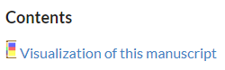
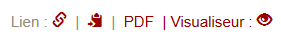

Die folgenden Informationen können Sie auch als PDF lesen: Download (PDF)
Was ist StruViMan?
Eine wachsende Zahl von Handschriften ist digital online verfügbar. Dies bietet den Wissenschaftlern neue Möglichkeiten, sich mit Manuskripten und deren Inhalten auseinanderzusetzen. Da es sich bei alten Kodizes um komplexe Objekte handelt und ihr aktueller Zustand oft das Ergebnis mehrerer Produktionsschichten ist, ist es sinnvoll, ihre Komponente über Bild und Text hinaus zu untersuchen. Unterschiede in Produktionseinheiten, Beschreibstoffen, Lagen und Schreibern (um nur einige Elemente zu nennen) können alle einen Einblick in die Entwicklung des Kodex als ein Objekt, das sich im Laufe der Zeit verändert, geben.
Die Strukturvisualisierung von Manuskripten (StruViMan) ist ein Webservice, der als praktische Erweiterung des Projekts der Paratexte der griechischen Bibel, eines ERC-Projekts an der LMU München, entwickelt wurde. Unter Verwendung hauptsächlich digitaler Reproduktionen (wie sie z.B. über NTVMR der Universität Μünster erhältlich sind) überprüft das Team jedes neutestamentliche Manuskript sorgfältig und das Vorhandensein von biblischen Texten und Paratexten wird in einer Datenbank dokumentiert.
StruViMan transformiert diese Manuskriptdaten in eine visuelle Darstellung, die die Struktur eines Manuskripts auf einen Blick sichtbar macht. Die Visualisierung liefert Informationen sowohl zur chronologischen Entwicklung des Kodex (hier in Form der verschiedenen Produktionseinheiten) als auch zu den strukturellen Aspekten seines Inhalts (in diesem Modell sind die Inhaltselemente nach Kategorien geordnet). Weitere Informationen sind durch Anklicken der entsprechenden Teile der Visualisierung leicht zugänglich.
Die Visualisierung ist momentan über drei Varianten erreichbar:
- Auf der Ergebnisseite einer Handschrift auf der Webseite Paratexte der griechischen Bibel unter dem Punkt Visualization of this manuscript.
- Auf der Ergebnisseite einer Handschrift auf der Webseite Pinakes links oben unter dem Punkt Visualiseur.
- Direkt hier auf der StruViMan-Webseite rechts oben auf die kleine Grafik klicken. Dort sind ein paar ausgewählte Handschriften zu finden.
Technisches Konzept
Der Webservice StruViMan ist einerseits mit dem Pinakes-Projekt verbunden und andererseits mit dem PtB-Projekt. Beide Projekte benutzen die gleiche Datenbank, zeigen aber zum Teil unterschiedliche Aspekte einer Handschrift an.
Das PtB-Projekt befindet sich momentan im Aufbau. Nach Eingabe einer Diktyon-Nummer werden ausgewählte Details zu der jeweiligen Handschrift angezeigt (Beispiel). Dort findet sich der Link zur Visualisierung der Handschrift:

Auf der Pinakes-Webseite haben Benutzer ebenfalls die Möglichkeit, sich detaillierte Daten von Handschriften anzeigen zu lassen. Auf der Ergebnisseite eines Manuskriptes (Beispiel) finden sich rechts oben mehrere Optionen:

Bei Klick auf die Option „Visualiseur“ werden Benutzer im gleichen Browserfenster in einem neuen Tab auf den StruViMan-Webservice weitergeleitet, analog dazu auch beim PtB-Projekt. Die beiden Tabs sind mit einer SessionID verknüpft. Weitere Manuskripte werden somit auch im aktuell geöffneten StruViMan-Tab dargestellt. Sind mehrere StruViMan-Tabs bzw. -fenster geöffnet, zeigen alle dasselbe an (spätestens nach einem Refresh).
Die Umsetzung von StruViMan erfolgte nach aktuellen Standards der Webprogrammierung: Vue.js, einem JavaScript-Webframework, HTML5 und CSS3. Die Visualisierung von StruViMan ist eine Vektorgrafik (SVG).
Die Daten aus der Datenbank werden mittels PHP und einem XML-Schema (XSD) in eine XML-Datei gespeichert und per JSON an unseren Server gesendet (Serverplattform: Node.js).
Die serverseitige Komponente ist notwendig, da StruViMan nicht auf dem gleichen Server wie die Datenbank von Pinakes und PtB gehostet wird und es daher für den StruViMan-Server einfacher ist, die XML-Daten von der Datenbank zu sammeln und zu analysieren, bevor sie an den Browser weitergeleitet werden. Dadurch kann es auch leicht erweitert werden, um in der Zukunft mit anderen Systemen/Servern zu interagieren und die Visualisierungsfunktion bereitzustellen. Bei Interesse schreiben Sie gerne einen der Kontakte an (siehe rechts unten).
In der Zukunft ist auch geplant, die Software öffentlich als Open Source zugänglich zu machen.
Design
Die Visualisierung stellt die Ansicht von dem Fußschnitt eines Buches dar.

Produktionseinheiten: Der Rücken des Buches besteht aus einem Balken, der in diesem Beispiel in zwei verschiedenfarbige Abschnitte unterteilt ist. Er zeigt, wie viele Produktionseinheiten im Manuskript vorhanden sind und an welcher Stelle im Manuskript sie vorkommen.
Inhaltselemente: Die Seiten des Buches geben nicht nur einen Überblick über die Inhalte im Codex, sondern zeigen auch, wie viel Platz jedes Element einnimmt. Es lässt sich leicht erkennen, welche Abschnitte des Buches zur gleichen Produktionseinheit gehören.
Durch die Farbgebung der Produktionseinheiten können diese gut unterschieden werden. Bei den Inhaltselementen werden den gleichen Kategorien auch die gleiche Farbe zugewiesen (Beispiel: Imagines -> schwarz). Produktionseinheiten und Inhaltselemente haben nie dieselbe Farbe. Alle Farben lassen sich im fortgeschrittenen Modus individuell anpassen.
Hauptfenster
Es gibt zwei verschiedene Arbeitsbereiche, die jeweils eine bestimmte Anzahl von Optionen anbieten:
Im einfachen Arbeitsbereich kann der Benutzer keine Einstellungen vornehmen und er eignet sich besonders für neue oder gelegentliche Benutzer. Dieser Modus ist aktiv, wenn der Schalter in der rechten oberen Ecke des Hauptfensters auf „einfach“ steht und der Rahmen eine hellgraue Farbe annimmt.
Im fortgeschrittenen Arbeitsbereich gibt es mehrere Optionen für die Anpassung der Grafik. Er ist aktiv, wenn der Schalter auf „fortgeschritten“ steht und der Rahmen eine dunkelgraue Farbe annimmt.
Optionen im einfachen Arbeitsbereich
Alle Manuskripte, die in einer bestimmten Sitzung vorhanden sind, werden unter Manuskripte am linken oberen Rand aufgelistet. Ein einfacher Klick auf einen Titel öffnet einen darunterliegenden Tab mit grundlegenden Informationen zum Manuskript und fokussiert die entsprechende Visualisierung. Ein Doppelklick auf den Titel öffnet ein Fenster wieder, wenn es vorher geschlossen worden ist. Zusätzlich kann auch das Symbol angeklickt werden, um die Visualisierung eines Manuskripts zu öffnen.
Manuskripte können auf unterschiedliche Art aus der Liste entfernt werden:
- Entfernung einzelner Handschriften durch Anklicken des Papierkorbsymbols links neben dem Titel.
- Durch Markierung einer oder mehrerer Checkboxen links neben dem Titel und Anklicken des Papierkorbsymbols in der untersten Zeile können mehrere Handschriften gleichzeitig entfernt werden.
- In der untersten Zeile können per Checkbox und Klick auf das Papierkorbsymbol alle vorhandenen Handschriften aus der Liste entfernt werden.
Die folgenden Menüoptionen erscheinen, wenn mehr als ein Manuskript in die Liste geladen wird (mit Ausnahme des Hilfebuttons, der immer vorhanden ist):
Optionen im fortgeschrittenen Arbeitsbereich
Zusätzlich zu allen Optionen des einfachen Bereichs sind hier mehrere Einstellungen möglich, die die Anzeige der Visualisierung verändern. Es gibt diese Optionen, bis auf die erste, auch auf Manuskriptfensterebene, dort können sie individuell für einzelne Handschriften eingestellt werden.
- In allen geöffneten Fenstern ändern: Wenn Änderungen im Einstellungsmenü vorgenommen werden, bestimmt dieser Schalter, ob diese Änderungen sowohl auf alle geöffneten Manuskripte als auch auf alle später geöffneten Manuskripte angewendet werden sollen (dann schalten Sie den Schalter ein) ODER nur auf alle Manuskripte, die später geöffnet werden.
- Die vier darunterliegenden Schalter ermöglichen es dem Benutzer, verschiedene Textbereiche und Beschreibungen innerhalb der Visualisierung ein- oder auszublenden:
- Beschriftung Produktionseinheiten: Nummer und Datum jeder Produktionseinheit.
- Beschriftung Inhaltselemente: Die Labels, die den Inhalt identifizieren.
- Titel: Die Signatur der Handschrift und ihre Betitelung, wie sie in den Projekten Pinakes und PtB erscheint.
- Informationsbereich: Der Textbereich unter der Visualisierung, der sich ändert, je nachdem auf welches Element der Benutzer in der Grafik klickt.
- Anzeige der Inhaltselemente: Hier kann der Benutzer bestimmen, wie die Inhaltssegmente angezeigt werden sollen:
- Beste Lesbarkeit: Logarithmische Anpassung der Segmentgröße, (gemäß der Formel ln(a+1) werden kleine Segmente vergrößert und große Segmente verkleinert). Parallele Inhalte werden als solche dargestellt.
- Proportional: Die Anzahl der Folios/Seiten eines Inhaltselementes bestimmt die Größe des Segmentes. Parallele Inhalte werden als solche dargestellt.
- Alle Inhalte gleich: Alle Segmente werden in der gleichen Größe angezeigt. Parallele Inhaltselemente werden nicht als solche angezeigt, sondern alle Elemente werden seriell nacheinander angezeigt.
Alle Änderungen sind sofort sichtbar und können übernommen (OK) oder verworfen (Cancel) werden. Reset setzt alle Einstellungen auf ihren Ausgangszustand zurück.
Manuskriptfenster
Es können beliebig viele Manuskriptfenster geöffnet werden. So können beispielsweise ähnliche Handschriften einfach miteinander verglichen werden. Der Benutzer hat hier unabhängig vom Hauptfenster die Möglichkeit in zwei unterschiedlichen Modi zu arbeiten (Das blau Hinterlegte ist der aktive Modus.):
Warum gibt es zwei verschiedene Modi?
StruViMan ist so konzipiert, dass es sowohl intuitiv als auch für Anfänger einfach zu bedienen ist. Darüber hinaus kann der einfache Modus einen schnellen und einfachen Zugriff auf die Visualisierungen verschiedener Manuskripte
ermöglichen, ohne dass der Benutzer irgendwelche Einstellungen ändern muss.
Für Benutzer, die mehr Kontrolle über einzelne Aspekte ihrer Manuskriptvisualisierungen haben wollen, bietet der fortgeschrittene Modus eine erweiterte Anzahl von Optionen und ein höheres Maß an Anpassungsfähigkeit in der Anzeige.
Optionen im einfachen Modus
Grundlegende Informationen:
Das Fenster hat im einfachen Modus eine feste Größe, die Fenstergröße ist somit nicht veränderbar. Auch Manuskripte mit sehr vielen Inhaltselementen werden anfangs in der Standardgröße dargestellt. Diese können aber vergrößert werden per Klick auf "+++" (unter dem letzten angezeigten Inhaltselement).
Fährt der Benutzer über ein Inhaltselement in der Grafik, so werden die zugehörigen Informationen in einem Popup angezeigt. Bei Klick auf ein Element in der Grafik werden im unteren Informationsbereich die zugehörigen Informationen aus der Datenbank angezeigt. Bei Klick auf eine beliebige weiße Fläche im Fenster werden einige Metainformationen zur Handschrift im Informationsbereich angezeigt.
Jedes Zurückschalten auf diesen Modus ist ein Reset für die Grafik. Die Einstellungen des fortgeschrittenen Modus werden dann wieder auf die Grundeinstellungen zurückgesetzt.
Die Größe der Inhaltssegmente wird im einfachen Modus immer in der Variante Beste Lesbarkeit angezeigt. Das bedeutet, die Größe der Segmente werden logarithmisch angepasst.
Beschreibung der einzelnen Funktionen:
Mit einem Klick auf diese Schaltfläche öffnet sich ein neues Fenster, in dem der Benutzer mit der rechten Maustaste klicken und das Bild lokal auf seinem Computer speichern kann.
Dieses Fenster kann durch Anklicken des hellgrauen "x" in der rechten oberen Ecke geschlossen werden.
Anzeigen oder ausblenden der Beschriftung der Produktionseinheiten und der Beschriftung der Inhaltselemente.
Optionen im fortgeschrittenen Modus
Grundlegende Informationen:
Alle Einstellungen, die im fortgeschrittenen Modus gemacht werden, bleiben erhalten, auch wenn die Handschrift geschlossen (aber nicht aus der Liste entfernt) wird. Die gleiche Handschrift kann auch mehrfach geöffnet werden und es können in jeder geöffneten Instanz unterschiedliche Einstellungen vorgenommen werden. Jedes Zurückschalten auf den einfachen Modus ist ein Reset für die Grafik. Die Einstellungen des fortgeschrittenen Modus werden dann wieder auf die Grundeinstellungen zurückgesetzt.
Die Fenstergröße kann im fortgeschrittenen Modus in alle Richtungen verändert werden. Somit kann zum Beispiel ganz leicht die Größe angepasst werden, sollte einmal nicht der gesamte Text eines Labels zu sehen sein; (indem man das Fenster nach rechts vergrößert). Die Größe des Informationsbereichs passt sich automatisch der Textmenge an.
Beschreibung der einzelnen Funktionen:
Die erste Funktion links ermöglicht es dem Benutzer zu bestimmen, wie die Inhaltssegmente angezeigt werden. Diese Option gibt es auch auf Hauptfensterebene.
- Beste Lesbarkeit: Logarithmische Anpassung der Segmentgröße, (gemäß der Formel ln(a+1) werden kleine Segmente vergrößert und große Segmente verkleinert). Parallele Inhalte werden als solche dargestellt.
- Proportional: Die Anzahl der Folios/Seiten eines Inhaltselementes bestimmt die Größe des Segmentes. Parallele Inhalte werden als solche dargestellt.
- Alle Inhalte gleich: Alle Segmente werden in der gleichen Größe angezeigt. Parallele Inhaltselemente werden nicht als solche angezeigt, sondern alle Elemente werden seriell nacheinander angezeigt.
Mit einem Klick auf diese Schaltfläche öffnet sich ein neues Fenster, in dem der Benutzer mit der rechten Maustaste klicken und das Bild lokal auf seinem Computer speichern kann.
Dieses Fenster kann durch Anklicken des hellgrauen "x" in der rechten oberen Ecke
geschlossen werden.
Die vier darunterliegenden Schalter ermöglichen es dem Benutzer, verschiedene Textbereiche und Beschreibungen innerhalb der Visualisierung ein- oder auszublenden:
- Beschriftung der Produktionseinheiten: Nummer und Datum jeder Produktionseinheit.
- Beschriftung der Inhaltselemente: Die Labels, die den Inhalt identifizieren.
- Titel: Die Signatur der Handschrift und ihre Betitelung, wie sie in Pinakes erscheint.
- Informationsbereich: Der Textbereich unter der Visualisierung, der sich ändert, je nachdem auf welches Element der Benutzer in der Grafik klickt.
Alle Änderungen sind sofort sichtbar und können übernommen (OK) oder verworfen (Cancel) werden. Reset setzt alle Einstellungen auf ihren Ausgangszustand zurück.
Option 1: Hier kann man die Farbe der Produktionseinheiten (in diesem Beispiel „1.A“) sowie jeder Kategorie (in diesem Beispiel „Testamentum nouum“) ändern, die in diesem Manuskript vorkommen. So kann der Benutzer ein eigenes Farbkonzept anwenden.
Option 2: Jede Produktionseinheit sowie jede Kategorie lassen sich einzeln ausblenden. Ein Element muss jeweils vorhanden bleiben. Der vorhandene Platz wird dann dynamisch von den noch übrig gebliebenen Elementen ausgefüllt. Benutzer können so beispielsweise momentan nicht benötigte Kategorien ausblenden oder sich nur eine Produktionseinheit ansehen.
Alle Änderungen sind sofort sichtbar und können übernommen (OK) oder verworfen (Cancel) werden. Reset setzt alle Einstellungen auf ihren Ausgangszustand zurück.